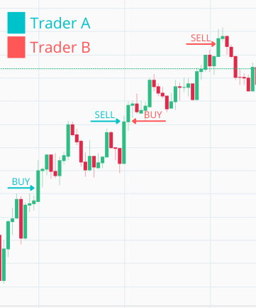
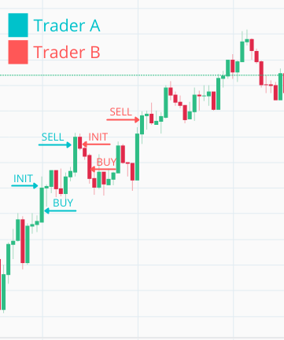

Chapter 6 Introduce a buy_down_interval to make a single trader more profitable
6.1 Objectives
- present reasons why to introduce
buy_down_interval - add
buy_down intervaltoNaive.Trader’s state and calculate buy price - add
buy_down intervaltoNaive.Trader’s state compiled by theNaive.Leader - manually test the implementation inside iex
6.2 Why we need to buy below the current price? Feature overview

The Naive.Trader process(marked in above diagram with blue color) at the arrival of the first trade event, immediately places a buy order at the current price. At the moment when the buy order gets filled, it places the sell order which later also gets filled.
The Trader A exits and a new trader B is started which again immediately places a buy order at the same price as the previous trader just sold. When this gets filled sell order gets placed and the loop continues on and on.
We can see that there’s a problem here as we just paid a fee twice(once for selling by the Trader A and once for buying by the Trader B) without really gaining anything(the Trader A could just hold the currency and could simply cash in on double profit in this specific situation).
The solution is to be more clever about our buy order’s price. The idea is simple, instead of placing a new buy order at the current price(price from the last TradeEvent), we will introduce a buy_down_interval:

So every new Naive.Trader process as it receives the first trade event, the trader will take its price and will calculate a decreased price by using the buy_down_interval value(for example 0.005 would be 0.5%) and place a buy order at that calculated price.
When looking at the chart above we can figure out that buy_down_interval should never be smaller than double the fee(at the moment of writing transaction fee is 0.1%) that you are paying per transaction.
6.3 Naive.Trader implementation
Let’s open the Naive.Trader module’s file(/apps/naive/lib/naive/trader.ex) and add buy_down_interval to its state:
# /apps/naive/lib/naive/trader.ex
...
defmodule State do
@enforce_keys [
:symbol,
:buy_down_interval, # <= add this line
:profit_interval,
:tick_size
]
defstruct [
:symbol,
:buy_order,
:sell_order,
:buy_down_interval, # <= add this line
:profit_interval,
:tick_size
]
end
...Next, we need to update the initial handle_info/2 callback which places the buy order. We need to retrieve the buy_down_interval and the tick_size from the state of the trader to be able to calculate the buy price. We will put the logic to calculate that price in a separate function at the end of the file:
# /apps/naive/lib/naive/trader.ex
...
def handle_info(
%TradeEvent{price: price},
%State{
symbol: symbol,
buy_order: nil,
buy_down_interval: buy_down_interval, # <= add this line
tick_size: tick_size # <= add this line
} = state
) do
price = calculate_buy_price(price, buy_down_interval, tick_size)
# ^ add above call
...To calculate the buy price we will use a very similar method to the one used
before to calculate the sell price. First, we will need to cast all variables
into the Decimal structs and then, we will simply subtract the buy_down_interval of the price from the price. The number that we will end up with won’t necessarily be a legal price as every price needs to be divisible by the tick_size which we will assure in the last calculation:
# /apps/naive/lib/naive/trader.ex
...
defp calculate_buy_price(current_price, buy_down_interval, tick_size) do
# not necessarily legal price
exact_buy_price =
D.sub(
current_price,
D.mult(current_price, buy_down_interval)
)
D.to_string(
D.mult(
D.div_int(exact_buy_price, tick_size),
tick_size
),
:normal
)
end
...6.4 Naive.Leader implementation
Next, we need to update the Naive.Leader as it needs to add buy_down_interval to the Naive.Trader’s state:
# /apps/naive/lib/naive/leader.ex
defp fetch_symbol_settings(symbol) do
...
%{
symbol: symbol,
chunks: 1,
# 0.01% for quick testing
buy_down_interval: "0.0001", # <= add this line
# -0.12% for quick testing
profit_interval: "-0.0012",
tick_size: tick_size
}
end
...6.4.1 IEx testing
That finishes the buy_down_interval implementation, we will jump into the IEx session to see how it works, but before that, for a moment we will change the logging level to debug to see current prices:
After starting the streaming we should start seeing log messages with current prices. As we updated our implementation we should place our buy order below the current price as it’s visible below:
$ iex -S mix
...
iex(1)> Streamer.start_streaming("FLMUSDT")
{:ok, #PID<0.313.0>}
iex(2)> Naive.start_trading("FLMUSDT")
21:16:14.829 [info] Starting new supervision tree to trade on FLMUSDT
...
21:16:16.755 [info] Initializing new trader for FLMUSDT
...
21:16:20.000 [debug] Trade event received FLMUSDT@0.15180000
21:16:20.009 [info] Placing BUY order for FLMUSDT @ 0.1517, quantity: 100As we can see our Naive.Trader process placed a buy order below the current price (based on the most recent trade event received)
[Note] Please remember to revert the change to logger level as otherwise there’s too much noise in the logs.
[Note 2] Please remember to run the mix format to keep things nice and tidy.
The source code for this chapter can be found on GitHub